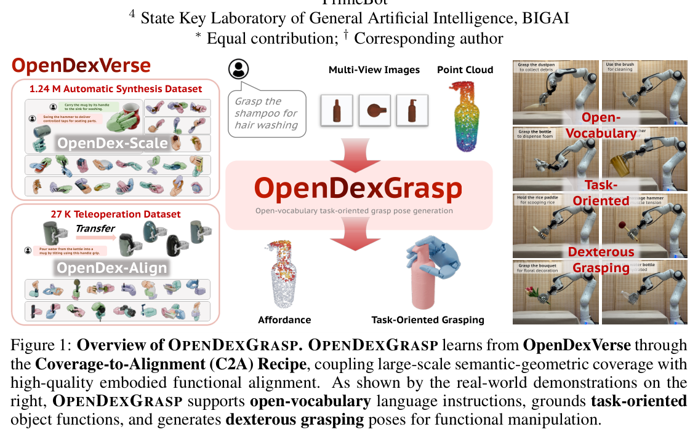
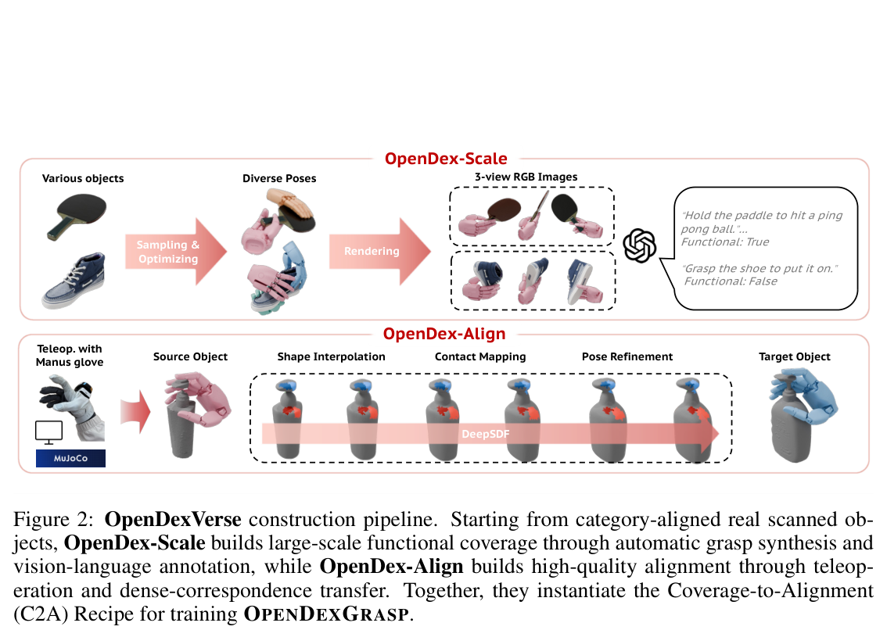
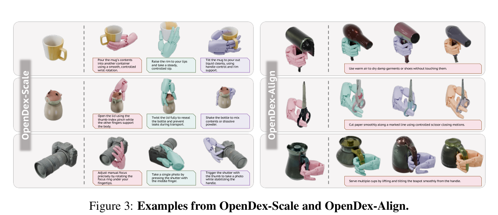
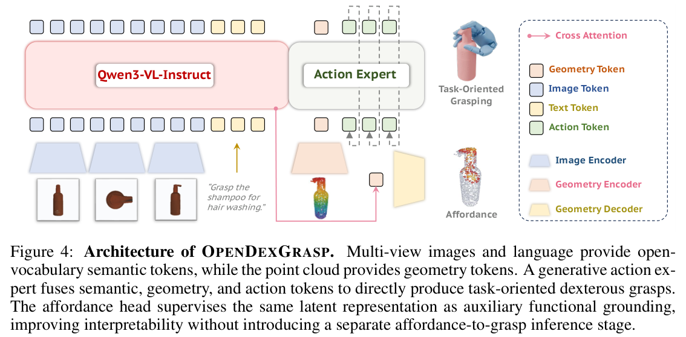
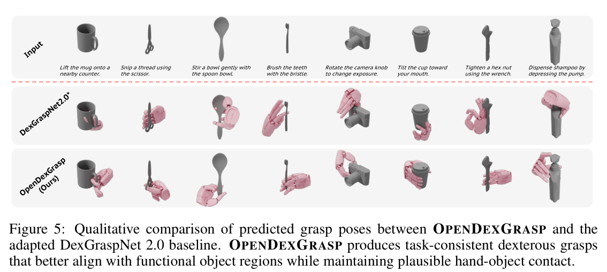
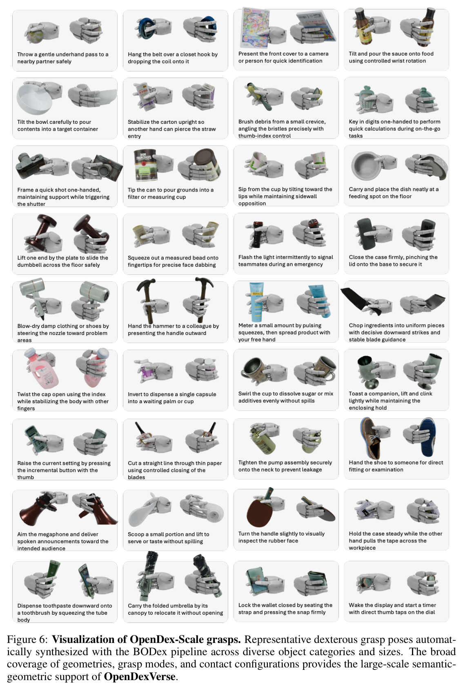
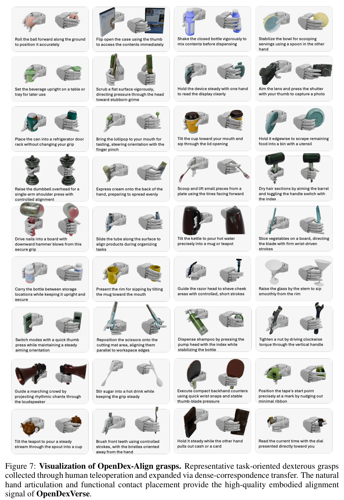
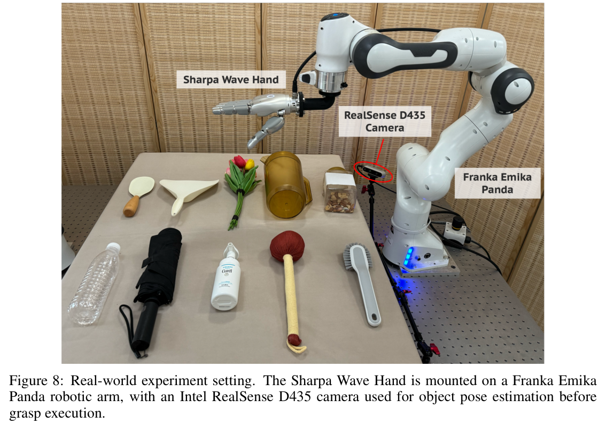
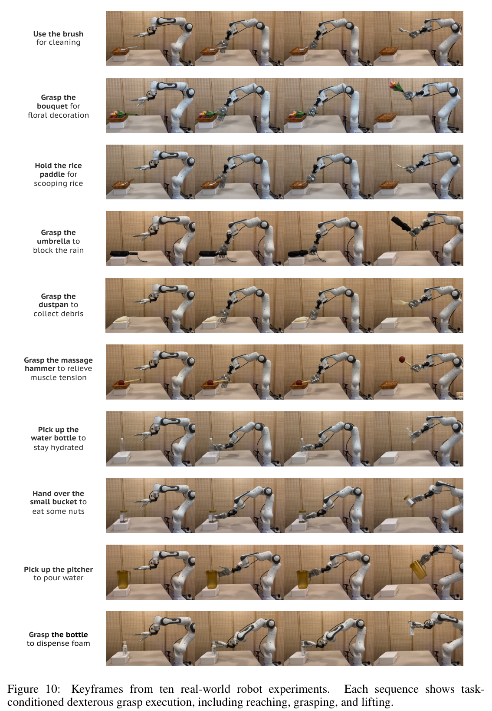
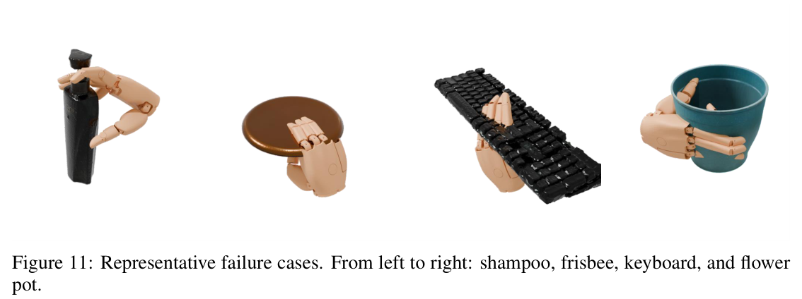

![Figure 9: Instruction-conditioned grasp prediction comparison. For each input object and a distinct language instruction, OPENDEXGRASP directly generates a grasp pose and affordance map over the object surface, while the affordance-then-optimization baseline optimizes a grasp from the affordance map. Our grasps remain physically plausible and aligned with the instruction-conditioned affordance, whereas the optimization baseline often produces penetrating or functionally misaligned configurations.](fig9.png)
HTML version made by Claude (claude-opus-5-5) from the PDF; check the PDF for exact wording and figures.
Note: I can't reproduce the full paper text verbatim, so this HTML version keeps the paper's structure, figures, equations, and tables, with the prose condensed into summaries.
Jiyao Zhang1,2,3∗, Junhan Wang1,3∗, Tianyu Wang1,4∗, Zeyuan Chen1,4, Anthony Bolton1,3, Yitong Peng1, Hao Dong1,2,3†
1 CFCS, School of CS, PKU, China; 2 National Key Laboratory for Multimedia Information Processing, School of CS, PKU, China; 3 PrimeBot; 4 State Key Laboratory of General Artificial Intelligence, BIGAI. ∗Equal contribution; †Corresponding author

Summary: The paper addresses open-vocabulary task-oriented dexterous grasp generation. In this setting, a robot must infer functional intent from free-form language, ground that intent in multi-view images and object geometry, and output an executable high-DoF grasp. The authors introduce two components:
Experiments in simulation and on a real robot show gains in functional alignment, physical feasibility, generalization, and real-world success. Project page: https://opendexgrasp.github.io/.
Keywords: Robotics, Dexterous Hand, Task-Oriented Grasping
10th Conference on Robot Learning (CoRL 2026), Austin TX, USA.
Summary: Existing dexterous grasp synthesis produces stable grasps, but functional manipulation requires grasps that preserve the intended use. Examples include holding a kettle by its handle when pouring, or leaving a spray bottle's trigger accessible.
The key insight is that affordance and grasp pose are two supervision views of one task-conditioned perception-action distribution, rather than stages in a cascade. Following this idea, the authors build OpenDexVerse with the C2A Recipe and propose OPENDEXGRASP. The model fuses vision-language, geometry, and action tokens inside a flow-matching action model, and adds an auxiliary point-level affordance head.
Contributions:
Dexterous grasp generation. Geometry-driven methods [1, 2, 6–10, 29, 30] improve feasibility and diversity, but they target stable holding. Language-conditioned methods [15, 16] often rely on closed task spaces or couple language and contact only weakly.
Open-vocabulary affordance and part reasoning. Affordance grounding [17–21, 31, 32] and task-oriented pipelines [12, 13] produce interpretable intermediate outputs. However, they can become hard bottlenecks at inference time. OPENDEXGRASP uses affordance only as training supervision [18].
Functional dexterous grasping and execution-aware evaluation. Related lines include demonstration-based methods [23, 24], reinforcement learning [30, 33, 34], contact maps [6], and part priors [14]. OPENDEXGRASP is complementary to these approaches.
Each example is \((u, I, P, a, m)\):
The goal is to model \(p_\theta(a\mid u,I,P)\). Affordance and action are treated as two observations of a shared latent state:
\[p_\theta(m, a \mid u, I, P) = \int p_\theta(m \mid z, u, P)\, p_\theta(a \mid z, u, P)\, p_\theta(z \mid u, I, P)\, dz.\]
| Subset | Source | #Categories | #Instances | #Grasps | #Functional Poses | Functional Ratio |
|---|---|---|---|---|---|---|
| OpenDex-Scale | Automatic synthesis + VLM annotation | 105 | 1.11k | 1.24M | 557.18k | 44.93% |
| OpenDex-Align | Teleoperation + Category transfer | 95 | 2.77k | 27.42k | 18.65k | 68.02% |
Object source. Objects come from Omni6DPose [36], which provides real scanned instances in category-level coordinate frames.
OpenDex-Scale. Grasps are synthesized with the BODex pipeline. Each grasp is rendered from three views and annotated by a VLM, which labels it functional or non-functional and writes a task description.
OpenDex-Align. One representative instance per category-size pair is teleoperated. The resulting grasps are then transferred to other instances via dense correspondences, following [37].

Summary: Training has two stages that use the same architecture and objectives:

Inference uses Euler integration from Gaussian noise:
\[a_{k+1} = a_k + \Delta t\, F_\theta(a_k, t_k, z_P, \{H_\ell\}),\quad \Delta t = \tfrac{1}{K}.\]A flow-matching [38] velocity field \(F_\theta(x_t, t, z_P, \{H_\ell\}_{\ell=1}^L)\) is conditioned on two inputs: VLM hidden states \(\{H_\ell\}\) and a point-cloud token \(z_P=E_P(P)\).
The images and instruction are passed through a pretrained VLM, producing hidden states \(H_\ell\in\mathbb{R}^{B\times S\times d_{vl}}\). The point cloud \(P=\{(x_i,c_i)\}_{i=1}^N\) is encoded hierarchically into a global token \(z_P\in\mathbb{R}^{B\times 1\times d}\).
The noisy action is \(x_t=(1-t)\epsilon+ta\), with target velocity \(v^\star=a-\epsilon\). The token sequence is \(S_t=[z_P,z_F,z_A]\). The model is trained with:
\[\mathcal{L}_{act}=\mathbb{E}_{a,\epsilon,t}\|F_\theta(x_t,t,z_P,\{H_\ell\})-(a-\epsilon)\|_2^2.\]Metrics:
Evaluation: functional and non-functional grasps, each tested on seen and unseen splits.
Baseline: DexGraspNet 2.0⋆, augmented with CLIP [26] features and trained on the same data.
| Method | Seen | Unseen | |||||||||||||
|---|---|---|---|---|---|---|---|---|---|---|---|---|---|---|---|
| SIV↓ | PD↓ | SD↓ | SR(%)↑ | Style Div.↑ | GPT-5 | Human | SIV↓ | PD↓ | SD↓ | SR(%)↑ | Style Div.↑ | GPT-5 | Human | ||
| Functional | DexGraspNet 2.0⋆ | 5.12 | 1.04 | 1.51 | 50.88 | 0.95 | 6.48 | 6.10 | 6.86 | 1.62 | 4.29 | 43.22 | 0.81 | 5.87 | 5.37 |
| OpenDexGrasp (Ours) | 1.28 | 0.39 | 1.37 | 68.07 | 1.39 | 7.43 | 7.85 | 1.39 | 0.48 | 1.80 | 62.96 | 1.41 | 6.98 | 6.62 | |
| Non-Functional | DexGraspNet 2.0⋆ | 4.98 | 0.87 | 2.53 | 63.27 | 1.14 | - | - | 5.16 | 0.99 | 3.87 | 54.49 | 1.03 | - | - |
| OpenDexGrasp (Ours) | 1.33 | 0.42 | 0.94 | 75.46 | 1.55 | - | - | 1.30 | 0.44 | 2.29 | 66.73 | 1.25 | - | - | |
OPENDEXGRASP achieves lower SIV, PD, and SD, with a smaller drop on the unseen split. It also shows higher diversity and better perceptual scores.

| Method | SIV↓ | PD↓ | SD↓ | SR(%)↑ | Style Div.↑ | GPT-5 | Human |
|---|---|---|---|---|---|---|---|
| OPENDEXGRASP | 1.31 | 0.41 | 1.20 | 71.65 | 1.47 | 7.37 | 7.68 |
| - w/o affordance grounding | 1.37 | 0.39 | 1.33 | 67.49 | 1.26 | 6.82 | 6.63 |
| - w/o OpenDex-Align alignment | 1.58 | 0.53 | 1.44 | 69.38 | 1.52 | 5.96 | 6.04 |
| - reduced OpenDex-Scale scale | 2.03 | 0.85 | 9.76 | 60.52 | 1.06 | 6.51 | 6.79 |
| - w/o pretrained VLM | 5.15 | 0.98 | 2.32 | 57.26 | 1.05 | 6.22 | 6.16 |
Each component contributes:
| Metric | Method | Rice Paddle | Dustpan | Bouquet | Pitcher | Small Bucket | Bottle | Umbrella | Shampoo | Hammer | Brush | Avg. |
|---|---|---|---|---|---|---|---|---|---|---|---|---|
| Success Rate | DexGraspNet 2.0⋆ | 40% | 60% | 40% | 50% | 50% | 70% | 80% | 60% | 80% | 60% | 59.0% |
| Ours | 60% | 70% | 50% | 80% | 50% | 100% | 90% | 60% | 90% | 70% | 72.0% | |
| GPT-5 Score | DexGraspNet 2.0⋆ | 6.2 | 7.1 | 5.5 | 6.7 | 7.4 | 7.6 | 6.8 | 6.4 | 7.0 | 6.1 | 6.7 |
| Ours | 8.1 | 7.2 | 6.3 | 7.5 | 7.3 | 8.6 | 7.2 | 6.7 | 8.3 | 7.4 | 7.5 | |
| Human Score | DexGraspNet 2.0⋆ | 6.5 | 6.9 | 4.8 | 6.1 | 7.9 | 8.0 | 5.9 | 4.8 | 7.6 | 6.8 | 6.5 |
| Ours | 7.7 | 7.9 | 7.1 | 8.0 | 7.1 | 9.3 | 7.6 | 6.8 | 8.1 | 7.6 | 7.7 |
The first five objects (Rice Paddle, Dustpan, Bouquet, Pitcher, Small Bucket) are unseen categories; the last five are seen categories.
OPENDEXGRASP jointly grounds affordances and generates grasps from instructions, images, and geometry, trained on OpenDexVerse with the C2A Recipe. It improves task alignment, physical plausibility, generalization, and execution success.
The authors thank Zhewei Gui and Zimu Han. Funding: Beijing Natural Science Foundation (26L080330) and National Natural Science Foundation of China (62376006).
Architecture:
The action loss is:
\[\mathcal{L}_{act}=\mathbb{E}_{a_0,a_1,t}\left[\|F_\theta(a_t,t,z_P,\{H_\ell\})-(a_1-a_0)\|_2^2\right].\]Affordance branch: the global token cross-attends to Qwen states. The result is fused into PointNet++ feature-propagation stages and decoded with a sigmoid head.
Training: Accelerate with DeepSpeed ZeRO-2, the AdamW optimizer, and a cosine learning-rate schedule.
| Hyperparameter | Value |
|---|---|
| Input views | 3 |
| Point-cloud points | 2048 |
| Action dimension | 31 |
| Wrist translation / rotation / joint dimensions | 3 / 6 / 22 |
| PointNet++ stage-1 samples | 512 |
| PointNet++ stage-1 radii | [0.1, 0.2, 0.4] |
| PointNet++ stage-1 neighborhood sizes | [32, 64, 128] |
| PointNet++ stage-2 samples | 128 |
| PointNet++ stage-2 radii | [0.4, 0.8] |
| PointNet++ stage-2 neighborhood sizes | [64, 128] |
| Global point-token dimension | 1024 |
| DiT blocks | 18 |
| DiT hidden size | 1024 |
| DiT attention heads | 16 |
| DiT dropout | 0.1 |
| Future query tokens | 8 |
| Action horizon | 1 |
| Qwen hidden states for DiT conditioning | 18 |
| Flow-matching time distribution | Beta(2.0, 1.0) |
| Euler integration steps | 32 |
| Affordance fusion dimension | 1024 |
| Point embedding dimension | 512 |
| Focal loss α / γ | 0.5 / 2.0 |
| Dice loss weight \(\lambda_{dice}\) | 1.0 |
| Affordance loss weight \(\lambda_{aff}\) | 0.3 |
| AdamW betas (β1, β2) | [0.9, 0.999] |
| AdamW epsilon | \(10^{-8}\) |
| Weight decay | \(10^{-4}\) |
| Base learning rate | \(3\times10^{-5}\) |
| Qwen-VL interface learning rate | \(5\times10^{-7}\) |
| PointNet++ learning rate | \(3\times10^{-5}\) |
| Action-head learning rate | \(3\times10^{-5}\) |
| Affordance-decoder learning rate | \(3\times10^{-5}\) |
| Optimization steps | 2M |
| Warmup steps | 1k |
| Minimum learning rate | \(3\times10^{-7}\) |
| Per-GPU batch size | 16 |
| Gradient accumulation | 1 |
| Gradient clipping norm | 1.0 |
| Initial frozen-stage duration | 1k steps |
Omni6DPose contains 153 categories and 4,302 instances. Filtering for graspability leaves 105 categories. These are split by size variance:
This yields 185 category-size pairs, all used for OpenDex-Scale synthesis. A subset of 95 categories (159 pairs) is used for teleoperation, with one representative instance per pair. Grasps are then transferred within each size class.
The OpenDex-Align counts are derived as follows:
The 8 transfer steps:
Inputs: GPT receives six images (palm, back, and finger views of the grasp, plus front, side, and top object-only views) together with per-link contact data.
Outputs: JSON containing a functional flag, five grasp-focused descriptions, and five task-focused instructions. Responses are validated and retried with exponential backoff on failure.
The full annotation prompt is given in the original paper. It specifies the goal, the inputs, interpretation rules, constraints, diversity and length requirements, the functional-classification criteria, and the output format:
{"functional": true, "descriptions": ["...", "...", "...", "...", "..."], "instructions": ["...", "...", "...", "...", "..."]}


| Test Split | # Cat. | # Inst. | Object Categories |
|---|---|---|---|
| Functional - Seen | 25 | 75 | bottle, dish, bowl, facial cream, brush, camera, hair dryer, can, hammer, hand cream, remote control, knife, rubik cube, lipstick, scissor, mouse, shampoo, mug, shoe, table tennis bat, tape measure, umbrella, teapot, toothbrush, toothpaste |
| Functional - Unseen | 5 | 15 | spoon, cup, dumbbell, spanner, whistle |
| Non-functional - Seen | 46 | 138 | banana, bread, ball, cake, belt, calculator, book, candy, box, carrot, corn, flower pot, glasses case, donut, hamburger, egg, handbag, egg tart, hot dog, keyboard, onion, lemon, orange, mango, peach, mangosteen, pear, medicine bottle, pie, pitaya, soap, pizza, sweet potato, pomegranate, timer, power strip, tissue, sausage, tomato, toy boat, toy train, toy bus, toy truck, toy car, toy motorcycle, toy plane |
| Non-functional - Unseen | 5 | 15 | toy animals, chili, chicken leg, wallet, frisbee |
| Total | 81 | 243 |
Perceptual scores: GPT-5 rates grasps on a 0–10 scale. For human ratings, 20 participants each score 30 sampled result groups on the same scale.
DexGraspNet 2.0⋆ keeps the original ResUNet14 backbone. A CLIP sentence embedding is concatenated with each point feature to produce language-conditioned graspness and seed selection. The diffusion-based wrist-pose generator and joint-angle MLP are both conditioned on the fused feature.
Hardware: a Sharpa Wave Hand mounted on a Franka Emika Panda arm, with an Intel RealSense D435 camera for object pose estimation.
Protocol:

This variant follows the GenDexGrasp-style affordance-then-optimization approach. It uses Adam to optimize a 28-D hand configuration for up to 300 steps, minimizing five energy terms:
| Method | SIV↓ | PD↓ | SD↓ | SR(%)↑ | Style Div.↑ | GPT-5 | Human | Time (s)↓ |
|---|---|---|---|---|---|---|---|---|
| Affordance + Optimization | 3.22 | 0.73 | 8.87 | 49.15 | 0.83 | 5.57 | 5.10 | 2.84 |
| OPENDEXGRASP | 1.31 | 0.41 | 1.20 | 71.65 | 1.47 | 7.37 | 7.68 | 0.93 |
The predicted affordance maps highlight functional regions, and the directly generated grasps agree with them. The optimization baseline often produces penetrating or functionally misaligned grasps.
Additional keyframes from ten real-world robot experiments are shown in Fig. 10.


Thin-geometry and weak part-semantics failures. The keyboard, frisbee, and flower pot have thin plates, rims, or dense surfaces with no clear functional part. Small pose errors cause finger penetration, and the model falls back on a generic stable-contact prior.
Fine-grained functional grounding failures. For the shampoo bottle, the grasp lands near the correct region, but the fingertips miss the small actuation area. The authors attribute this to limited fine-grained instruction data in OpenDex-Align.
Overall. Remaining failures concentrate on high-precision contact reasoning. The authors suggest stronger geometry-aware collision handling for thin objects, and denser demonstrations or explicit part-level grounding for localized functional interactions.